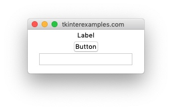
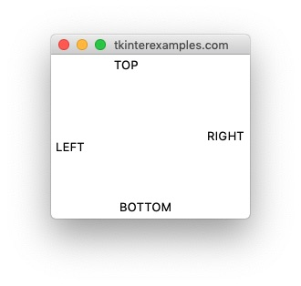
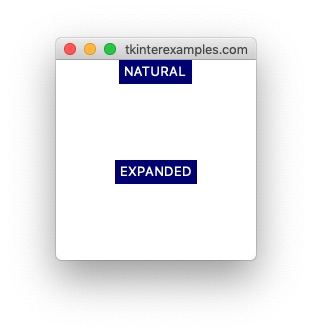
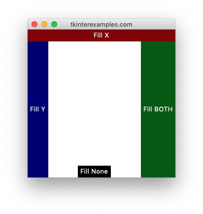
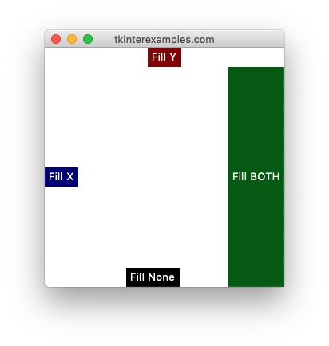
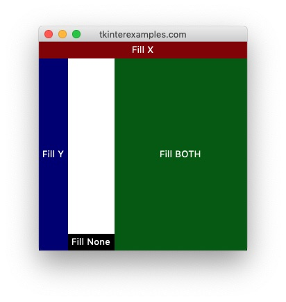

Pack
The pack geometry manager is the simplest way to get widgets into an application window. This is extremely helpful for prototyping an application or a program with only a handful of elements such as a photoviewer, a chat application, etc. We probably don’t want to use it for our calculator or
crossword puzzle app however.
No Arguments Here
The great thing about .pack() is that it works even if no arguments are supplied. The behavior in this case is that all widgets will be stacked one on top of another. We commonly use this over at the widgets page to demonstrate what something looks without much concern to the exact placement.
import tkinter
root = tkinter.Tk()
tkinter.Label(root, text="Label").pack()
tkinter.Button(root, text="Button").pack()
tkinter.Entry(root, text="Entry").pack()
root.mainloop()

Picking Sides
To exercise a bit more control over our widgets using pack we can use the side= attribute. This allows us to tell tkinter which side of the containing element (Tk,
Frame, TopLevel) we want our widget placed at. The default side used is tkinter.TOP.
import tkinter
root = tkinter.Tk()
tkinter.Label(root, text="RIGHT").pack(side=tkinter.RIGHT)
tkinter.Label(root, text="TOP").pack(side=tkinter.TOP)
tkinter.Label(root, text="LEFT").pack(side=tkinter.LEFT)
tkinter.Label(root, text="BOTTOM").pack(side=tkinter.BOTTOM)
root.mainloop()

Expanding On That A Bit
Setting expand=True in .pack() tells the geometry manager to fill any unused space within the widgets parent. Note that this does not change the size of the widget but merely how it is placed within the widget. In the example below you’ll see that the EXPAND label is normally sized but it centers itself in the “unused” space of the application.
import tkinter
root = tkinter.Tk()
# Create a window a bit bigger than the elements to see positions accurately
root.geometry("200x200")
tkinter.Label(root, text="NATURAL", bg="navy", fg="white").pack()
tkinter.Label(root, text="EXPANDED", bg="navy", fg="white").pack(expand=True)
root.mainloop()

Filling In The Gaps
The pack geometry manager gives us the option of setting a fill= argument in order to tell our widget to fill up space in any direction. There are 4 different fill options, X (horizontally), Y (vertically), BOTH (either), and NONE (do not fill).
import tkinter
root = tkinter.Tk()
root.geometry("300x300")
tkinter.Label(root, text="Fill X", bg="darkred", fg="white").pack(fill=tkinter.X)
tkinter.Label(root, text="Fill Y", bg="navy", fg="white").pack(side=tkinter.LEFT, fill=tkinter.Y)
tkinter.Label(root, text="Fill BOTH", bg="darkgreen", fg="white").pack(side=tkinter.RIGHT, fill=tkinter.BOTH)
tkinter.Label(root, text="Fill None", bg="black", fg="white").pack(side=tkinter.BOTTOM, fill=tkinter.NONE)
root.mainloop()

From the sound of it we may expect to the “Fill BOTH” cell to take up more space in the X direction. The error here is that side=RIGHT for the widget, so it can only “fill” in the Y axis where it’s not pushed to anywhere specific. An example to highlight this, switching only the fill for X to Y and vice versa from above:

To get a result where our element fills in both directions and takes up any unused space then we want to use fill in conjunction with expand . From the code above all we have to do is set expand=True on the “Fill BOTH” cell and we get this:
